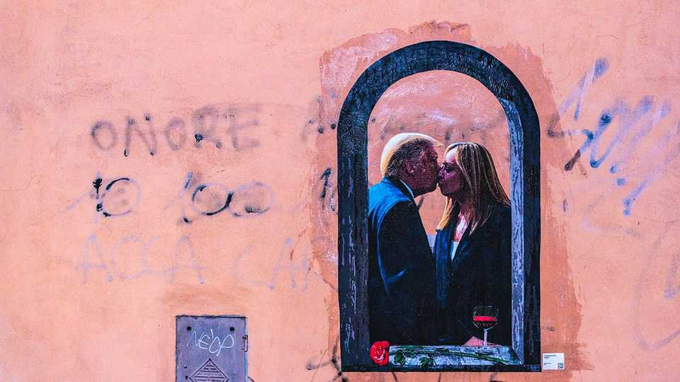

Both Donald Trump and Giorgia Meloni are begging for trouble
The dalliance between the populist-right leaders of America and Italy is off—or is it?
June 25th 2026

Several of Giorgia Meloni’s ministers are due at a reception at the American embassy in Rome on July 2nd to mark the United States’ 250th birthday. The mood may not be festive. Last week a row between the prime minister and President Donald Trump led to her foreign minister scrapping a visit to Washington. Then on June 24th her defence minister tried to rebut statements by Mark Rutte, head of NATO, that Italy had (despite its denials) let American planes use its airbases in the war on Iran. It all illustrated Ms Meloni’s impossible task: preserving relations with America while distancing herself from Mr Trump to appeal to Italians.
The ructions between the populist-right leaders began on June 19th, when Mr Trump accused Ms Meloni of begging him for a photo op at the recent G7 summit. She hit back with an impassioned video, telling him: “Neither I nor Italy ever beg.” Mr Trump was already irritated by Ms Meloni’s refusal publicly to endorse the attack on Iran. When he responded to her video by claiming she had lost popularity, she snapped back: “My popularity is none of your concern. I suggest you focus on yours.”
The obvious explanation is exasperation. Italy’s prime minister had clung more tenaciously than leaders of other European states to a belief in “the West”, and to an Atlantic alliance the president has repeatedly undermined. Mr Trump may also have touched a genuine sore point. Italy saw the summit as a chance to repair ties with America that had been frayed by the president’s clash with Pope Leo. It is hard to imagine Ms Meloni begging. But it is possible an aide assigned to get a joint photo overdid it.
The cynical explanation is that Ms Meloni’s beef is calculated. Her biggest headache is the rise of a new right-wing party, more extreme than her Brothers of Italy. Led by a retired general, Roberto Vannacci, Futuro Nazionale is rapidly gaining support—perhaps overtaking the League, one of the Brothers’ coalition partners, which has fallen to around 6% in polls. To fend off Mr Vannacci, Ms Meloni might have to embrace hard-right positions that would, in turn, alienate mainstream conservatives who flocked to her in the 2022 election.
Her response to Mr Trump meant the general could not attack her for failing to defend the nation’s honour, and won her the admiration of Italians who revile America’s president. She may hope that will give her ministers room to quietly share an independence-day beer with the Americans. But Mr Rutte’s tactlessness has restarted the fireworks. ■
To stay on top of the biggest European stories, sign up to Café Europa, our weekly subscriber-only newsletter.